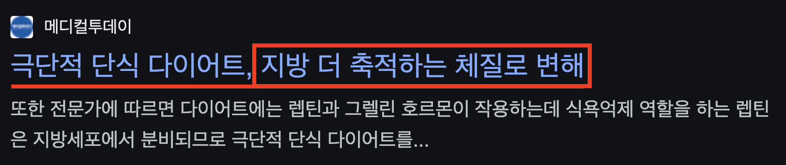
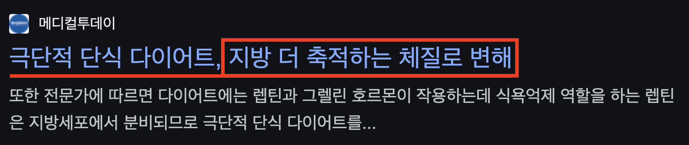

빠르게 감량하려고
단순히 굶거나
극단적인 식단을 하다가
 

잘못된 방식으로
돈과 시간 낭비하고
건강만 망가지는
상황에서 벗어나
연예인처럼 단기간에도
체중과 라인까지
예쁘게 관리하여
원하는 시기에
당당한 자신감을
가질 수 있도록!
실제 연예인이 하고 있는
감량 방법을 활용하여
여러분의 현재 상황에 맞는
잘못된 감량 방법을 찾고
목표 감량까지 성공한
실전 노하우를 공개합니다!
연예인처럼 빠르고 예쁘게
감량하고 싶은 분들을 위하여
실제 연예인들과
똑같이 관리 받을 수 있는
컷앤컷 연예인 다이어트
선착순 50명 한정!
무료 상담 특별 이벤트!
결혼 드레스가 안맞아서
잠을 못 잘 정도였던
29살 한XX 님
"진짜 웨딩 촬영 날짜 다가올수록 마음이 초조해서 미치는 줄 알았어요."
평소처럼 굶고 운동만 엄청 했는데 살은 안 빠지고 오히려 팔다리만 말라가더라고요. 진짜 제일 중요한 허리랑 배는 그대로라 드레스 피팅할 때 지퍼가 간신히 올라가고 숨도 제대로 못 쉴 정도였어요. 진짜 이대로 촬영 망하는 거 아닌가 싶어서 밤마다 울고 난리도 아니었어요.
시간이 가까워 올수록 이러다가는 도저히 안되겠다는 절박함이 들어서 밤새 카페도 둘러보고 친구들한테 물어보다가 기획사에 있는 친구 추천받아서 이곳에서 상담 받았어요.
처음에는 '효과 없으면 어쩌지?', '내가 정말 잘 따라갈 수 있을까?' 이런 걱정들이 많이 들었어요.
근데 여기 프로그램은 바쁜 연예인들이 왜 여기서 관리받는지 알겠더라고요. 일반적인 방법과 달리 무조건 빼기만 하는 게 아니라 예쁘고 건강하게 라인까지 잡아주고, 무엇보다 제 생활 패턴이랑 흐름에 맞게 프로그램을 짜주니까 직장 생활하면서 전혀 부담스럽지 않았어요.
습관적으로 거부감이 크거나 어려운 지점을 쉽게 만들어주니까 정말 편하게 진행하는데도 하루하루가 달라져서 놀랐어요.
꾸준히 관리받으며 드디어 촬영 당일, 드레스 입었는데 허리 완벽하고 몸매 라인이 너무 예쁘게 나와서 믿기지도 않았어요. 특히 라인이 바로 서니까 촬영하시는 분도 칭찬을 엄청해주고 진짜 촬영 내내 진짜 웃음이 안 멈추고 행복했고 지금 사진 볼 때마다 또 행복해져요.
진짜 인생에 가장 예뻐야 하는 순간을 빛내주어서 너무나 감사합니다.
취업 준비하면서
너무 힘들었던
26살 김XX 님
"취업 준비하면서 면접 계속 떨어지니까 솔직히 외모 탓인가 싶어서 자존감이 완전 바닥이었어요."
자신감도 없어지고 작아지기만 하니까 스트레스는 엄청 받고 친구들은 사회에 나가서 연애도 하고 그러는데 초라한 제 자신을 보는게 너무 힘들었어요.
이를 풀기 위해서 폭식하는 걸 반복하다 보니 몸은 점점 망가지고, 그 상태로 취업 준비를 하니까 악순환에 연속이었어요.
그러던 어느 날 면접을 앞두고 정장을 입어보는데, 거울에 비친 제 모습이 그렇게 초라해보일 수 없었어요...
도저히 이렇게는 살면 안되겠다고 굳은 결심하고 나서 몸부터 제대로 관리해야겠다고 결심하고 제대로 빼고 싶어 찾다가 광고를 통해 우연히 이곳을 알게 되어 시작하게 되었어요.
단순히 체중만 빼는게 아니라 예쁘게 라인을 만들어준다는 게 너무 매력적이었어요. 맨날 굶는거나 적게 먹고 운동만 하다가 포기만 했지, 제대로 감량하는 방법을 솔직히 전혀 몰랐는데, 제 스케줄이랑 면접 준비까지 현실적인 일상 패턴에 맞춰 프로그램을 세심하게 짜준 게 가장 큰 장점이었어요.
저에게 맞는 올바른 방식으로 빼니까 제 일상이 규칙적으로 바뀌고 거울 속에 비치는 제 모습이 너무 달라지니까, 하는 행동도 달라지고 사람들의 시선이 달라지니 그 짧은 시간에 모든 마인드가 많이 바뀌었던 것 같아요.
그런 모습이 많이 느껴졌는지, 살도 빠지고 몸매 라인도 잡히니까 면접 때 표정도 밝아지고, 면접관들도 저를 다르게 보더라고요. 정말 제 인생을 바꿔준 선택이었어요.
원하는 곳에 합격 통지서 받고 이제는 진정한 사회인으로 삶을 살게 되는게 참 기쁩니다.
다이어트는 단순히 살 빼는게 아니라 인생을 바꾸는 계기가 되는 정말 중요한 포인트가 되는 것 같아요. 여러분도 인생의 변화가 필요할 때 제대로 배우고 인생을 바꾸는 순간이 되셨으면 좋겠어요~
예쁘고 건강하게 감량하는게
진정한 다이어트 입니다
컷앤컷 연예인 다이어트!
1) 굶거나 극단적인 방법 NO!
현재 체형과 습관에 맞춰 빠르고 예쁘게!
무작정 굶는 다이어트는 이제 그만! 단기간에 체중을 감량하면서도 예쁜 몸매 라인을 유지할 수 있도록, 연예인들이 선택하는 맞춤형 다이어트 솔루션을 제공합니다. 개개인의 체형과 습관을 분석해 가장 효과적인 감량 방법을 찾아드립니다.
2) 바쁜 일상 속에서도 부담 없이
생활 패턴에 맞춘 최적의 다이어트
시간이 없어서, 식단 관리가 어려워서 포기했던 경험이 있나요? 개인의 일상과 스케줄을 고려해 다이어트가 부담이 아닌 자연스러운 습관이 될 수 있도록 도와드립니다. 현실적인 루틴 속에서 무리 없이 체중을 감량할 수 있는 프로그램을 제공합니다.
3) 요요없이 원하는 목표까지 건강하게
사후 관리까지 철저하게!
다이어트는 어떻게든 체중만을 감량하는 것이 아니라 건강한 습관을 만들어가는 것입니다. 컷앤컷 만의 사후 관리 프로그램으로 건강하게 감량할 수 있는 목표까지 끝까지 도움을 드리고 있습니다.
4) 전문 영양사/트레이너가 참여하여
체계적이고 과학적으로 설계
모든 프로그램 과정 하나하나 전문가의 체계적인 프로세스를 통해 여러분의 평범한 일상을 체지방을 빼는 일상으로 변화시키는데 도움을 드립니다.
전혀 걱정하지 마세요!
여러분이 가장 궁금해하시는 내용,
여기서 모두 확인해 보세요!
-
정말 굶지 않고도 빠질 수 있나요?
저희는 극단적인 저칼로리 식단이나 굶는 방법을 절대 권장하지 않습니다. 단기간에 빼더라도 건강과 영양 밸런스를 지키면서 지속 가능한 습관을 만드는 것이 핵심입니다.
1) 실제로 연예인들도 바쁜 스케줄 속 체력을 유지해야 해 굶는 방식을 사용할 수 없습니다.
2) 개인의 기초대사량·생활패턴을 분석해 설계한 균형 잡힌 식단으로 체지방을 효율적으로 태웁니다.
3) 무리하게 굶지 않음으로써 다이어트 이후에도 요요가 최소화됩니다. -
저는 워낙 바쁜데, 시간도 부족하고 운동할 여력이 없어요. 괜찮을까요?
네, 충분히 가능합니다. 저희 프로그램은 바쁜 스케줄 속에서도 실천할 수 있도록 최적화되어 있습니다.
- 직장인, 주부, 학생 등 일상에 쫓기는 분들도 무리 없이 주·월 단위 체크로 효과를 봤습니다.
- 긴 운동 시간을 강요하기보다는, 틈새 운동·간단 스트레칭·생활습관 교정 위주로 진행합니다.
- 어디서든 활용 가능한 짧은 동작과 현실적인 식단 가이드를 제공해, 생활 패턴을 바꾸지 않아도 부담없이 진행할 수 있습니다. -
비용이 많이 들지 않을까요?
무료 상담을 통해 먼저 나에게 맞는 감량 플랜을 확인하시는 것을 권장드립니다.
- 실제 비용은 개인 체형, 목표 감량치, 기간 등에 따라 달라집니다.
- 무조건 ‘고가’를 지향하는 것이 아니라, 가장 효과적인 방법을 찾는 데 중점을 두고 있습니다.
- 상담 뒤에 결정하셔도 되고, 부담스럽다면 진행하지 않으셔도 전혀 문제가 없습니다. -
효과를 못 보거나 중간에 포기하면 어떡하죠?
다이어트 실패 경험 때문에 걱정이 많으시죠? 저희는 중도 포기율을 낮추기 위해 다음을 제공합니다.
1) 1:1 전담 코치: 힘들 때마다 카톡·전화 등으로 즉각 피드백을 주고받고 해결책을 찾습니다.
2) 맞춤형 목표 분할: 한 번에 큰 목표가 아닌, 소목표로 성취감을 쌓아 동기를 유지합니다.
3) 심리적 지지: 단순 식단·운동이 아닌, 스트레스·우울감도 함께 살핍니다.
4) 요요 방지 시스템: 정체기나 슬럼프 시 프로그램을 유연하게 재설계하여 포기하지 않도록 돕습니다. -
운동이 필수인가요? 운동을 정말 싫어하는데도 괜찮나요?
무조건 “헬스장 2시간!” 식으로 강요하지 않습니다.
- 운동에 대한 거부감이 크다면, 식단 + 생활습관 교정만으로도 충분히 감량할 수 있게 코칭합니다.
- 라인을 예쁘게 만들기 위해서는 어느 정도 근력 운동이 도움이 되지만, 개인 상황에 맞춰 쉬운 대안을 제시하니 걱정하지 않으셔도 됩니다. -
정말 요요 없이 유지가 가능할까요?
저희는 극단적 단식 대신, 장기적으로 생활습관을 바꿔 기초대사량이 크게 떨어지지 않게 합니다.
- 프로그램 후반부에는 유지 단계를 거쳐, 서서히 칼로리 섭취를 조절하며 건강하게 원상 복귀.
- 다이어트가 끝나도 요요 위험을 선제적으로 차단할 수 있습니다. -
저는 40대/50대 중년 여성인데, 나이 들어도 빠질 수 있을까요?
네, 나이와 무관하게 가능합니다. 중년 이후에는 오히려 건강 관리가 더 중요하기도 합니다.
- 근육량 감소·호르몬 변화 등 연령대별 이슈를 고려해, 맞춤 영양·운동을 설계합니다.
- 이미 40대/50대 이상의 고객 사례가 많으며, 안전하게 꾸준히 감량하신 분들이 많습니다.
- 기존 질환·건강 상태가 있으면 전문가 협진 하에 안전성을 우선으로 진행합니다. -
구체적으로 어떤 방법으로 체형 분석을 해주나요?
무료 상담 시, 먼저 체형 및 체질 검사로 체중·체지방·근육량을 파악하고,
생활습관 설문(식습관, 수면, 스트레스, 과거 경험 등)을 통해 개인별 문제를 분석합니다.
- 현재 상황과 목표를 종합해, 얼마나, 어느 시점까지 감량하면 되는지 예상치를 구체화해드립니다.
- “왜 내가 살이 안 빠지는지, 어느 부위를 집중 관리해야 하는지”를 정확히 짚어내 드리니, 막연하지 않습니다. -
무료 상담 받고 나면 결제나 등록을 강요하지 않나요?
전혀 강요하지 않습니다. 상담만 받아보시고, 본인께 맞지 않다면 진행 안 하셔도 됩니다.
- 상담은 말 그대로 분석과 안내가 목적입니다. 프로그램에 대해 충분히 들어보시고 고민하셔도 늦지 않습니다.
- “적합하겠다”고 판단되시면 그때 등록하시면 되고, 부담 없이 돌아가셔도 전혀 문제가 없습니다. -
확실히 라인이 예쁘게 잡히나요?
체중 숫자만 줄이는 것이 아니라, 체형 라인을 잡는 것에 초점을 맞춥니다.
- 연예인이 촬영·무대 준비를 단기간에 할 수 있는 이유도 “라인 관리”를 중점적으로 하기 때문입니다.
- 특정 부위(허리, 복부, 팔, 허벅지 등)에 대한 집중 관리 프로세스를 통해실루엣 개선을 돕습니다.
- 실제 후기에서도 짧은 기간에 “몸매 라인이 예뻐졌다”는 호평이 많습니다.
“인생에 중요한 순간,
예쁘고 당당한
나로 살고 싶다면?”
“단순한 체중 감소가 아닌
예쁜 라인으로
몸매를 바꿔보고 싶다면?”
마감 기한 전까지!
선착순 100명 한정으로
전문가분들이 1:1로 직접
무료 상담을 진행하니
간단한 1분 무료 신청으로
올바른 감량 노하우 및
특별 혜택까지 가득 받아가세요!
현재 78 / 100 명 신청 중입니다.
인원 마감시 종료됩니다.